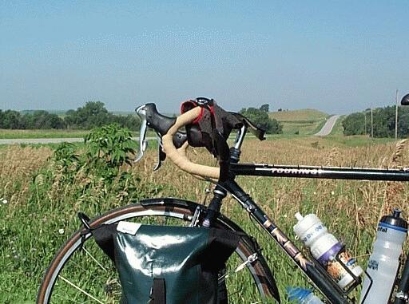
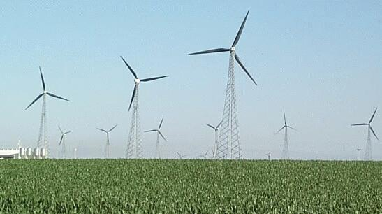
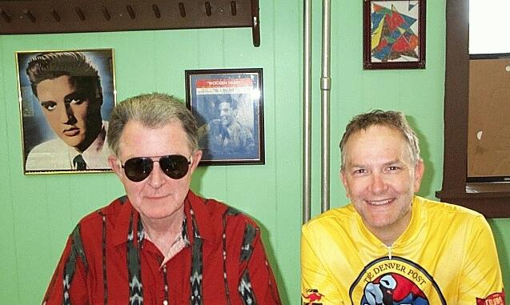
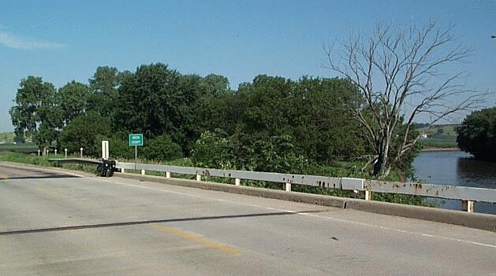
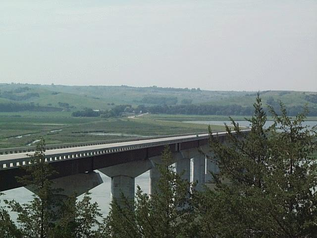
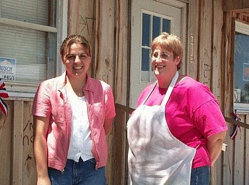

| (click on photos to expand) | You are now Entering the Middle | ||||||||||||||||||||||||||||||||
 Nowhere in Nebraska. There would appear to be a lot of it.     
|
Springview, NE (July
16, 2001) The words of a
Gary Larsen Cartoon keep running through my head. It goes something
like this, "Welcome to Nowhere. You are now entering the
middle." Maybe we should write the tourism department for the
state of Nebraska, do you think they'd change their state motto? Of
course this is only nowhere because of a lack of buildings and
people. It certainly is somewhere to the flowers and the
birds. It is actually interesting to me that new species of birds
and land formations are starting to appear. These are plains that have been eroding and every now and then some harder
rocks have resisted erosion creating a mound. These appear to
be rock on top supported by sandy soil.
The whippoorwills keep laughing at me. As do some of the local residents, I suspect. What a fool-hardy thing to be doing, riding your bike in 90 degree heat. Today I'd have to agree -- stopping about 30 miles shy of the 95 mile route I had foolishly planned for today. The trip from Iowa to South Dakota and now Nebraska has been pretty good. Mostly favorable conditions and some good casual conversation. The route I choose from Iowa to South Dakota worked better than expected -- bypassing a region of long steep hills. The towns of Vermillion and Yankton both make worthy stopping places. Yankton has a nice bike shop, river front parks, and a state park nearby. I crossed into Nebraska near Niobrara (nigh - o - brear - a). There are few good hills here but none that are terribly punishing. Spencer and Springview are really small towns yet they have all the amenities -- groceries, lodging, camping, and a post office. Last night in Spencer I stayed at the Skyline Motel and tonight I'm at the Turtle Butte in Springview. Since I couldn't verify the existence of a place to camp or stay in Springview, I called upon Team Digression to sort things out. Because of a lack of cell service, I still hadn't heard back by the time I arrived in Springview. Looking around I didn't see a hotel so I pulled into a cafe for refreshments and suggestions. Upon entering, the young woman said, "we have your room all ready for you." After a moments disorientation, I realized I had accidentally stumbled into the hotel and Pat had already made the arrangements. What a wonderful relief it was because I was done with today. Most remarkably, twenty percent of the miles for the entire trip are now behind me. Brendan and Kelly were very interested my trip and even ventured out into the hot sun to see the bike. It would appear that the computer is the most impressive item I carry but I still think it's the stove and cook set. Tomorrow I'll camp and use that cook set as I'll travel a mere 50 miles toward Valentine. Brenda informs me that west of Valentine is the real center of nowhere. Putting her finger down on the map along my chosen route, she said, "I think there's a tree right about here." I have to admit these look like scary times ahead because I think I'm going to be seeing a lot of nowhere for a long time. -joe
|
||||||||||||||||||||||||||||||||
{kind=link}
{kind=link}
{kind=link}
{kind=link}
{kind=link}
{kind=link}
{kind=link}